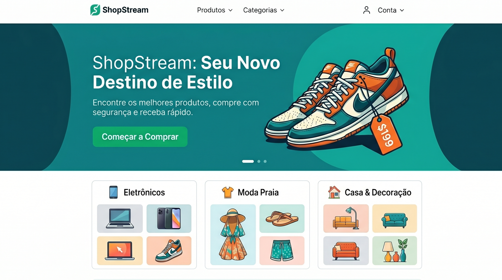
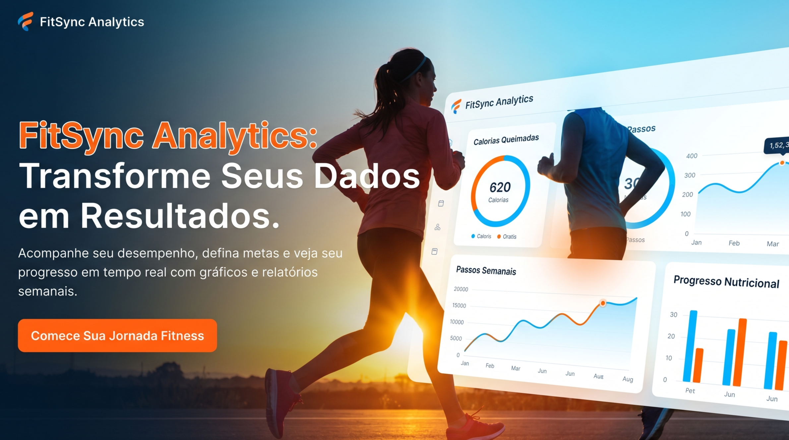

SOBRE MIM
Olá, eu sou Jade Pitanga.
Engenheira FullStack de Bangalore, desenvolvendo aplicações web, soluções de IA e produtos SaaS do mundo real que ultrapassam os limites da tecnologia.
MINHA MISSÃO
Unindo Design e Desenvolvimento: Onde a criatividade encontra a funcionalidade e a inovação impulsiona o progresso.
Continue em movimento, não se acomode.
Tecnologias que eu uso.
Aqui estão algumas tecnologias e ferramentas que tenho conhecimento e experiência:
| Front-end | Back-end | Banco de Dados | Ferramentas |
|---|---|---|---|
|
Tailwind
|
|
|
|
Meus Projetos
Do banco de dados à interface: projetos reais e completos com foco em arquitetura limpa, design responsivo, experiência do usuário e segurança.

ShopStream
Platarforma de e-commerce completa que permite aos usuários navegar por produtos, adicionar itens ao carrinho e finalizar compras de forma segura. Inclui um painel administrativo para controle de estoque em tempo real, gerenciamento de pedidos e análise de vendas.
- React
- Tailwind CSS
- Spring Boot
- PostgreSQL
- Stripe API

KanbanFlow
Um sistema colaborativo de gerenciamento de projetos inspirado no Trello. Permite a criação de quadros, listas e cartões interativos (drag-and-drop). A aplicação atualiza o status das tarefas em tempo real para todos os usuários conectados no mesmo quadro.
- Vue.js
- Ruby on Rails
- WebSockets
- PostgreSQL

FitSync Analytics
Um aplicativo de rastreamento de saúde onde os usuários podem registrar treinos diários, monitorar a ingestão de água e acompanhar metas nutricionais. O destaque do projeto é a geração automática de gráficos e relatórios semanais sobre o progresso do usuário.
- React
- Ruby on Rails
- Tailwind CSS
- MongoDB

EcoConnect
Uma plataforma baseada em geolocalização que conecta pessoas interessadas em voluntariado com ONGs locais voltadas para o meio ambiente. Os usuários podem se inscrever em eventos, enquanto as ONGs podem gerenciar os participantes e enviar comunicados internos.
- React
- Spring Boot
- Tailwind CSS
- MongoDB
- Google Maps API
Experiências
Engenheira FullStack
Remoto- Desenvolvimento de plataformas SaaS com React e Spring Boot.
- Liderança técnica de squad e implementação de CI/CD.
- Redução de 40% no tempo de entrega com automação de deploys.
Estagiária de Desenvolvimento
Remoto- Desenvolvimento de soluções para internet banking com Vue.js e Django.
- Automação de processos internos e suporte ao time de backend.
- Integração com APIs de pagamento.
Análise e Desenvolvimento de Sistemas
Presencial- Primeiros passos no mundo da programação.
- Desenvolvimento das bases em lógica, algoritmos e estrutura de dados.
- Onde a paixão por tecnologia começou.